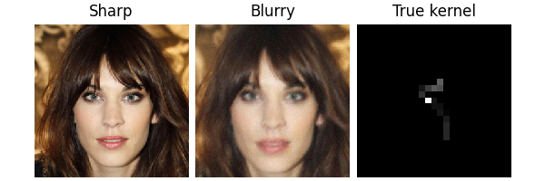
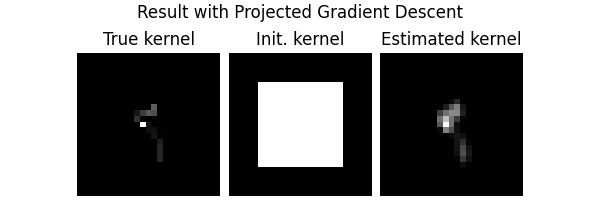
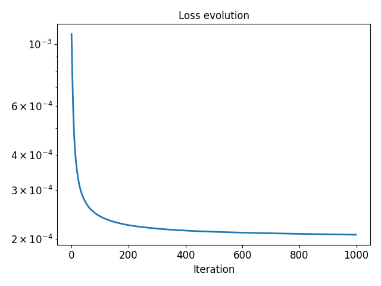
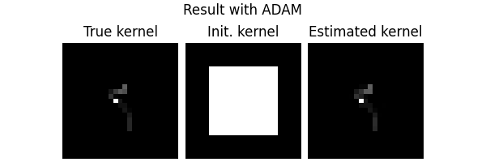
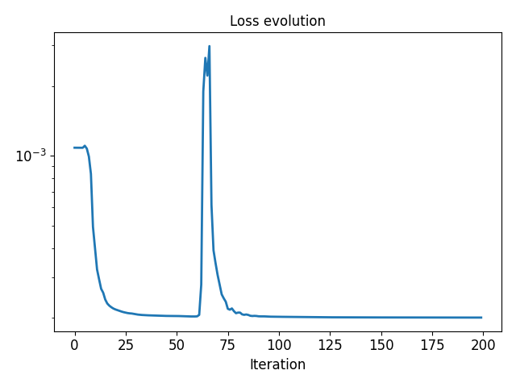
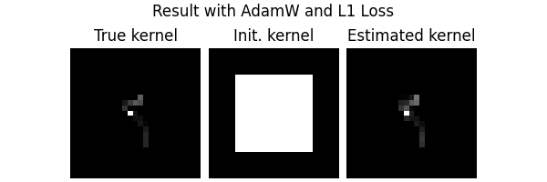
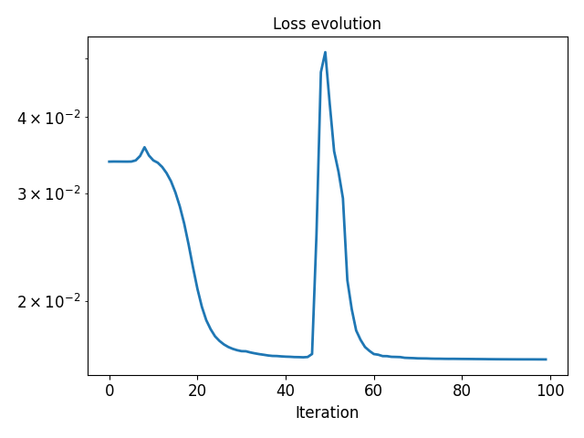

Note
New to DeepInverse? Get started with the basics with the 5 minute quickstart tutorial.
Solving blind inverse problems / estimating physics parameters#
This demo shows you how to use
deepinv.physics.Physics together with automatic differentiation to optimize your operator.
Consider the forward model
where \(N\) is the noise model, \(\forw{\cdot, \theta}\) is the forward operator, and the goal is to learn the parameter \(\theta\) (e.g., the filter in deepinv.physics.Blur).
In a typical blind inverse problem, given a measurement \(y\), we would like to recover both the underlying image \(x\) and the operator parameter \(\theta\), resulting in a highly ill-posed inverse problem.
In this example, we only focus on a much more simpler problem: given the measurement \(y\) and the ground truth \(x\), find the parameter \(\theta\). This can be reformulated as the following optimization problem:
This problem can be addressed by first-order optimization if we can compute the gradient of the above function with respect to \(\theta\). The dependence between the operator \(A\) and the parameter \(\theta\) can be complicated. DeepInverse provides a wide range of physics operators, implemented as differentiable classes. We can leverage the automatic differentiation engine provided in Pytorch to compute the gradient of the above loss function w.r.t. the physics parameters \(\theta\).
The purpose of this demo is to show how to use the physics classes in DeepInverse to estimate the physics parameters, together with the automatic differentiation. We show 3 different ways to do this: manually implementing the projected gradient descent algorithm, using a Pytorch optimizer and optimizing the physics as a usual neural network.
Import required packages
import deepinv as dinv
import torch
from tqdm import tqdm
import matplotlib.pyplot as plt
device = dinv.utils.get_freer_gpu() if torch.cuda.is_available() else "cpu"
dtype = torch.float32
Define the physics#
In this first example, we use the convolution operator, defined in the deepinv.physics.Blur class.
We also generate a random convolution kernel of motion blur
generator = dinv.physics.generator.MotionBlurGenerator(
psf_size=(25, 25), rng=torch.Generator(device), device=device
)
true_kernel = generator.step(1, seed=123)["filter"]
physics = dinv.physics.Blur(noise_model=dinv.physics.GaussianNoise(0.02), device=device)
x = dinv.utils.load_url_image(
dinv.utils.demo.get_image_url("celeba_example.jpg"),
img_size=256,
resize_mode="resize",
).to(device)
y = physics(x, filter=true_kernel)
dinv.utils.plot([x, y, true_kernel], titles=["Sharp", "Blurry", "True kernel"])

Define an optimization algorithm#
The convolution kernel lives in the simplex, ie the kernel must have positive entries summing to 1. We can use a simple optimization algorithm - Projected Gradient Descent - to enforce this constraint. The following function allows one to compute the orthogonal projection onto the simplex, by a sorting algorithm (Reference: Large-scale Multiclass Support Vector Machine Training via Euclidean Projection onto the Simplex – Mathieu Blondel, Akinori Fujino, and Naonori Ueda)
@torch.no_grad()
def projection_simplex_sort(v: torch.Tensor) -> torch.Tensor:
r"""
Projects a tensor onto the simplex using a sorting algorithm.
"""
shape = v.shape
B = shape[0]
v = v.view(B, -1)
n_features = v.size(1)
u = torch.sort(v, descending=True, dim=-1).values
cssv = torch.cumsum(u, dim=-1) - 1.0
ind = torch.arange(n_features, device=v.device)[None, :].expand(B, -1) + 1.0
cond = u - cssv / ind > 0
rho = ind[cond][-1]
theta = cssv[cond][-1] / rho
w = torch.maximum(v - theta, torch.zeros_like(v))
return w.reshape(shape)
# We also define a data fidelity term
data_fidelity = dinv.optim.L2()
Run the algorithm
Initialize a constant kernel
kernel_init = torch.zeros_like(true_kernel)
kernel_init[..., 5:-5, 5:-5] = 1.0
kernel_init = projection_simplex_sort(kernel_init)
n_iter = 1000
stepsize = 0.7
kernel_hat = kernel_init
losses = []
for i in tqdm(range(n_iter)):
# compute the gradient
with torch.enable_grad():
kernel_hat.requires_grad_(True)
physics.update(filter=kernel_hat)
loss = data_fidelity(y=y, x=x, physics=physics) / y.numel()
loss.backward()
grad = kernel_hat.grad
# gradient step and projection step
with torch.no_grad():
kernel_hat = kernel_hat - stepsize * grad
kernel_hat = projection_simplex_sort(kernel_hat)
losses.append(loss.item())
dinv.utils.plot(
[true_kernel, kernel_init, kernel_hat],
titles=["True kernel", "Init. kernel", "Estimated kernel"],
suptitle="Result with Projected Gradient Descent",
)

0%| | 0/1000 [00:00<?, ?it/s]
0%| | 2/1000 [00:00<00:50, 19.75it/s]
0%| | 5/1000 [00:00<00:48, 20.35it/s]
1%| | 8/1000 [00:00<00:47, 20.71it/s]
1%| | 11/1000 [00:00<00:47, 20.83it/s]
1%|▏ | 14/1000 [00:00<00:47, 20.88it/s]
2%|▏ | 17/1000 [00:00<00:46, 20.99it/s]
2%|▏ | 20/1000 [00:00<00:46, 21.03it/s]
2%|▏ | 23/1000 [00:01<00:46, 20.93it/s]
3%|▎ | 26/1000 [00:01<00:46, 21.00it/s]
3%|▎ | 29/1000 [00:01<00:46, 21.03it/s]
3%|▎ | 32/1000 [00:01<00:45, 21.06it/s]
4%|▎ | 35/1000 [00:01<00:45, 21.10it/s]
4%|▍ | 38/1000 [00:01<00:45, 21.11it/s]
4%|▍ | 41/1000 [00:01<00:45, 21.12it/s]
4%|▍ | 44/1000 [00:02<00:45, 21.04it/s]
5%|▍ | 47/1000 [00:02<00:45, 21.12it/s]
5%|▌ | 50/1000 [00:02<00:44, 21.15it/s]
5%|▌ | 53/1000 [00:02<00:44, 21.14it/s]
6%|▌ | 56/1000 [00:02<00:44, 21.14it/s]
6%|▌ | 59/1000 [00:02<00:45, 20.85it/s]
6%|▌ | 62/1000 [00:02<00:45, 20.83it/s]
6%|▋ | 65/1000 [00:03<00:44, 20.97it/s]
7%|▋ | 68/1000 [00:03<00:44, 21.05it/s]
7%|▋ | 71/1000 [00:03<00:44, 21.08it/s]
7%|▋ | 74/1000 [00:03<00:44, 20.90it/s]
8%|▊ | 77/1000 [00:03<00:44, 20.97it/s]
8%|▊ | 80/1000 [00:03<00:45, 20.31it/s]
8%|▊ | 83/1000 [00:03<00:44, 20.56it/s]
9%|▊ | 86/1000 [00:04<00:44, 20.76it/s]
9%|▉ | 89/1000 [00:04<00:43, 20.90it/s]
9%|▉ | 92/1000 [00:04<00:43, 20.98it/s]
10%|▉ | 95/1000 [00:04<00:43, 21.01it/s]
10%|▉ | 98/1000 [00:04<00:42, 21.08it/s]
10%|█ | 101/1000 [00:04<00:42, 21.13it/s]
10%|█ | 104/1000 [00:04<00:42, 21.16it/s]
11%|█ | 107/1000 [00:05<00:42, 21.17it/s]
11%|█ | 110/1000 [00:05<00:42, 21.12it/s]
11%|█▏ | 113/1000 [00:05<00:41, 21.17it/s]
12%|█▏ | 116/1000 [00:05<00:41, 21.14it/s]
12%|█▏ | 119/1000 [00:05<00:41, 21.15it/s]
12%|█▏ | 122/1000 [00:05<00:41, 21.13it/s]
12%|█▎ | 125/1000 [00:05<00:41, 21.17it/s]
13%|█▎ | 128/1000 [00:06<00:41, 21.20it/s]
13%|█▎ | 131/1000 [00:06<00:40, 21.22it/s]
13%|█▎ | 134/1000 [00:06<00:40, 21.21it/s]
14%|█▎ | 137/1000 [00:06<00:40, 21.21it/s]
14%|█▍ | 140/1000 [00:06<00:40, 21.23it/s]
14%|█▍ | 143/1000 [00:06<00:40, 21.22it/s]
15%|█▍ | 146/1000 [00:06<00:40, 21.18it/s]
15%|█▍ | 149/1000 [00:07<00:40, 21.16it/s]
15%|█▌ | 152/1000 [00:07<00:40, 21.01it/s]
16%|█▌ | 155/1000 [00:07<00:40, 20.97it/s]
16%|█▌ | 158/1000 [00:07<00:40, 20.99it/s]
16%|█▌ | 161/1000 [00:07<00:39, 21.02it/s]
16%|█▋ | 164/1000 [00:07<00:39, 21.00it/s]
17%|█▋ | 167/1000 [00:07<00:39, 20.99it/s]
17%|█▋ | 170/1000 [00:08<00:39, 21.02it/s]
17%|█▋ | 173/1000 [00:08<00:39, 21.08it/s]
18%|█▊ | 176/1000 [00:08<00:39, 21.10it/s]
18%|█▊ | 179/1000 [00:08<00:38, 21.11it/s]
18%|█▊ | 182/1000 [00:08<00:38, 21.11it/s]
18%|█▊ | 185/1000 [00:08<00:38, 21.11it/s]
19%|█▉ | 188/1000 [00:08<00:38, 21.03it/s]
19%|█▉ | 191/1000 [00:09<00:38, 21.05it/s]
19%|█▉ | 194/1000 [00:09<00:38, 21.09it/s]
20%|█▉ | 197/1000 [00:09<00:37, 21.16it/s]
20%|██ | 200/1000 [00:09<00:37, 21.17it/s]
20%|██ | 203/1000 [00:09<00:37, 21.19it/s]
21%|██ | 206/1000 [00:09<00:37, 21.16it/s]
21%|██ | 209/1000 [00:09<00:37, 21.14it/s]
21%|██ | 212/1000 [00:10<00:37, 21.15it/s]
22%|██▏ | 215/1000 [00:10<00:37, 21.17it/s]
22%|██▏ | 218/1000 [00:10<00:36, 21.18it/s]
22%|██▏ | 221/1000 [00:10<00:36, 21.15it/s]
22%|██▏ | 224/1000 [00:10<00:36, 21.16it/s]
23%|██▎ | 227/1000 [00:10<00:36, 21.15it/s]
23%|██▎ | 230/1000 [00:10<00:36, 20.99it/s]
23%|██▎ | 233/1000 [00:11<00:36, 21.01it/s]
24%|██▎ | 236/1000 [00:11<00:36, 21.03it/s]
24%|██▍ | 239/1000 [00:11<00:36, 21.05it/s]
24%|██▍ | 242/1000 [00:11<00:36, 21.03it/s]
24%|██▍ | 245/1000 [00:11<00:35, 21.05it/s]
25%|██▍ | 248/1000 [00:11<00:35, 21.04it/s]
25%|██▌ | 251/1000 [00:11<00:35, 21.05it/s]
25%|██▌ | 254/1000 [00:12<00:35, 21.04it/s]
26%|██▌ | 257/1000 [00:12<00:35, 21.07it/s]
26%|██▌ | 260/1000 [00:12<00:35, 21.07it/s]
26%|██▋ | 263/1000 [00:12<00:35, 21.05it/s]
27%|██▋ | 266/1000 [00:12<00:34, 21.07it/s]
27%|██▋ | 269/1000 [00:12<00:34, 21.03it/s]
27%|██▋ | 272/1000 [00:12<00:34, 21.01it/s]
28%|██▊ | 275/1000 [00:13<00:34, 21.01it/s]
28%|██▊ | 278/1000 [00:13<00:34, 21.02it/s]
28%|██▊ | 281/1000 [00:13<00:34, 21.02it/s]
28%|██▊ | 284/1000 [00:13<00:34, 20.82it/s]
29%|██▊ | 287/1000 [00:13<00:34, 20.91it/s]
29%|██▉ | 290/1000 [00:13<00:34, 20.82it/s]
29%|██▉ | 293/1000 [00:13<00:34, 20.23it/s]
30%|██▉ | 296/1000 [00:14<00:35, 19.72it/s]
30%|██▉ | 299/1000 [00:14<00:34, 20.10it/s]
30%|███ | 302/1000 [00:14<00:34, 20.36it/s]
30%|███ | 305/1000 [00:14<00:33, 20.49it/s]
31%|███ | 308/1000 [00:14<00:33, 20.65it/s]
31%|███ | 311/1000 [00:14<00:33, 20.74it/s]
31%|███▏ | 314/1000 [00:14<00:33, 20.78it/s]
32%|███▏ | 317/1000 [00:15<00:32, 20.85it/s]
32%|███▏ | 320/1000 [00:15<00:33, 20.38it/s]
32%|███▏ | 323/1000 [00:15<00:32, 20.56it/s]
33%|███▎ | 326/1000 [00:15<00:32, 20.67it/s]
33%|███▎ | 329/1000 [00:15<00:32, 20.78it/s]
33%|███▎ | 332/1000 [00:15<00:32, 20.85it/s]
34%|███▎ | 335/1000 [00:15<00:31, 20.95it/s]
34%|███▍ | 338/1000 [00:16<00:31, 21.00it/s]
34%|███▍ | 341/1000 [00:16<00:31, 21.05it/s]
34%|███▍ | 344/1000 [00:16<00:31, 21.08it/s]
35%|███▍ | 347/1000 [00:16<00:30, 21.08it/s]
35%|███▌ | 350/1000 [00:16<00:30, 21.11it/s]
35%|███▌ | 353/1000 [00:16<00:30, 21.12it/s]
36%|███▌ | 356/1000 [00:16<00:30, 21.13it/s]
36%|███▌ | 359/1000 [00:17<00:30, 21.13it/s]
36%|███▌ | 362/1000 [00:17<00:30, 21.16it/s]
36%|███▋ | 365/1000 [00:17<00:30, 21.15it/s]
37%|███▋ | 368/1000 [00:17<00:29, 21.11it/s]
37%|███▋ | 371/1000 [00:17<00:29, 21.11it/s]
37%|███▋ | 374/1000 [00:17<00:29, 21.08it/s]
38%|███▊ | 377/1000 [00:17<00:29, 21.10it/s]
38%|███▊ | 380/1000 [00:18<00:29, 21.11it/s]
38%|███▊ | 383/1000 [00:18<00:29, 21.15it/s]
39%|███▊ | 386/1000 [00:18<00:29, 21.17it/s]
39%|███▉ | 389/1000 [00:18<00:28, 21.12it/s]
39%|███▉ | 392/1000 [00:18<00:28, 21.12it/s]
40%|███▉ | 395/1000 [00:18<00:28, 21.12it/s]
40%|███▉ | 398/1000 [00:18<00:28, 21.12it/s]
40%|████ | 401/1000 [00:19<00:28, 21.12it/s]
40%|████ | 404/1000 [00:19<00:28, 21.13it/s]
41%|████ | 407/1000 [00:19<00:28, 21.12it/s]
41%|████ | 410/1000 [00:19<00:27, 21.12it/s]
41%|████▏ | 413/1000 [00:19<00:27, 21.13it/s]
42%|████▏ | 416/1000 [00:19<00:27, 21.14it/s]
42%|████▏ | 419/1000 [00:19<00:27, 21.17it/s]
42%|████▏ | 422/1000 [00:20<00:27, 21.20it/s]
42%|████▎ | 425/1000 [00:20<00:27, 21.20it/s]
43%|████▎ | 428/1000 [00:20<00:27, 21.18it/s]
43%|████▎ | 431/1000 [00:20<00:26, 21.14it/s]
43%|████▎ | 434/1000 [00:20<00:26, 21.12it/s]
44%|████▎ | 437/1000 [00:20<00:26, 21.09it/s]
44%|████▍ | 440/1000 [00:20<00:26, 20.94it/s]
44%|████▍ | 443/1000 [00:21<00:26, 20.96it/s]
45%|████▍ | 446/1000 [00:21<00:26, 21.01it/s]
45%|████▍ | 449/1000 [00:21<00:26, 21.03it/s]
45%|████▌ | 452/1000 [00:21<00:26, 20.96it/s]
46%|████▌ | 455/1000 [00:21<00:26, 20.96it/s]
46%|████▌ | 458/1000 [00:21<00:25, 20.97it/s]
46%|████▌ | 461/1000 [00:21<00:25, 20.99it/s]
46%|████▋ | 464/1000 [00:22<00:25, 20.98it/s]
47%|████▋ | 467/1000 [00:22<00:25, 20.98it/s]
47%|████▋ | 470/1000 [00:22<00:25, 20.99it/s]
47%|████▋ | 473/1000 [00:22<00:25, 20.98it/s]
48%|████▊ | 476/1000 [00:22<00:24, 20.99it/s]
48%|████▊ | 479/1000 [00:22<00:24, 20.97it/s]
48%|████▊ | 482/1000 [00:22<00:24, 20.98it/s]
48%|████▊ | 485/1000 [00:23<00:24, 20.97it/s]
49%|████▉ | 488/1000 [00:23<00:24, 20.96it/s]
49%|████▉ | 491/1000 [00:23<00:24, 20.91it/s]
49%|████▉ | 494/1000 [00:23<00:24, 20.90it/s]
50%|████▉ | 497/1000 [00:23<00:24, 20.91it/s]
50%|█████ | 500/1000 [00:23<00:23, 20.92it/s]
50%|█████ | 503/1000 [00:23<00:23, 20.95it/s]
51%|█████ | 506/1000 [00:24<00:23, 20.97it/s]
51%|█████ | 509/1000 [00:24<00:23, 20.99it/s]
51%|█████ | 512/1000 [00:24<00:23, 20.97it/s]
52%|█████▏ | 515/1000 [00:24<00:23, 20.96it/s]
52%|█████▏ | 518/1000 [00:24<00:22, 20.98it/s]
52%|█████▏ | 521/1000 [00:24<00:22, 21.00it/s]
52%|█████▏ | 524/1000 [00:24<00:22, 21.05it/s]
53%|█████▎ | 527/1000 [00:25<00:22, 21.05it/s]
53%|█████▎ | 530/1000 [00:25<00:22, 21.01it/s]
53%|█████▎ | 533/1000 [00:25<00:22, 21.07it/s]
54%|█████▎ | 536/1000 [00:25<00:22, 21.07it/s]
54%|█████▍ | 539/1000 [00:25<00:21, 21.07it/s]
54%|█████▍ | 542/1000 [00:25<00:21, 21.11it/s]
55%|█████▍ | 545/1000 [00:25<00:21, 21.14it/s]
55%|█████▍ | 548/1000 [00:26<00:21, 21.15it/s]
55%|█████▌ | 551/1000 [00:26<00:21, 21.14it/s]
55%|█████▌ | 554/1000 [00:26<00:21, 21.14it/s]
56%|█████▌ | 557/1000 [00:26<00:20, 21.12it/s]
56%|█████▌ | 560/1000 [00:26<00:20, 21.15it/s]
56%|█████▋ | 563/1000 [00:26<00:20, 21.17it/s]
57%|█████▋ | 566/1000 [00:26<00:20, 21.09it/s]
57%|█████▋ | 569/1000 [00:27<00:20, 21.10it/s]
57%|█████▋ | 572/1000 [00:27<00:20, 21.11it/s]
57%|█████▊ | 575/1000 [00:27<00:20, 21.09it/s]
58%|█████▊ | 578/1000 [00:27<00:20, 21.07it/s]
58%|█████▊ | 581/1000 [00:27<00:19, 21.10it/s]
58%|█████▊ | 584/1000 [00:27<00:19, 21.11it/s]
59%|█████▊ | 587/1000 [00:27<00:19, 21.13it/s]
59%|█████▉ | 590/1000 [00:28<00:19, 21.10it/s]
59%|█████▉ | 593/1000 [00:28<00:19, 21.04it/s]
60%|█████▉ | 596/1000 [00:28<00:19, 21.05it/s]
60%|█████▉ | 599/1000 [00:28<00:19, 21.03it/s]
60%|██████ | 602/1000 [00:28<00:18, 21.06it/s]
60%|██████ | 605/1000 [00:28<00:18, 21.08it/s]
61%|██████ | 608/1000 [00:28<00:18, 21.09it/s]
61%|██████ | 611/1000 [00:29<00:18, 21.10it/s]
61%|██████▏ | 614/1000 [00:29<00:18, 21.10it/s]
62%|██████▏ | 617/1000 [00:29<00:18, 21.11it/s]
62%|██████▏ | 620/1000 [00:29<00:17, 21.11it/s]
62%|██████▏ | 623/1000 [00:29<00:17, 21.14it/s]
63%|██████▎ | 626/1000 [00:29<00:17, 21.13it/s]
63%|██████▎ | 629/1000 [00:29<00:17, 21.13it/s]
63%|██████▎ | 632/1000 [00:30<00:17, 21.13it/s]
64%|██████▎ | 635/1000 [00:30<00:17, 21.14it/s]
64%|██████▍ | 638/1000 [00:30<00:17, 21.16it/s]
64%|██████▍ | 641/1000 [00:30<00:16, 21.14it/s]
64%|██████▍ | 644/1000 [00:30<00:16, 21.13it/s]
65%|██████▍ | 647/1000 [00:30<00:16, 21.15it/s]
65%|██████▌ | 650/1000 [00:30<00:16, 21.13it/s]
65%|██████▌ | 653/1000 [00:31<00:16, 21.10it/s]
66%|██████▌ | 656/1000 [00:31<00:16, 21.07it/s]
66%|██████▌ | 659/1000 [00:31<00:16, 21.06it/s]
66%|██████▌ | 662/1000 [00:31<00:16, 21.04it/s]
66%|██████▋ | 665/1000 [00:31<00:15, 21.04it/s]
67%|██████▋ | 668/1000 [00:31<00:15, 21.03it/s]
67%|██████▋ | 671/1000 [00:31<00:15, 21.04it/s]
67%|██████▋ | 674/1000 [00:32<00:15, 21.06it/s]
68%|██████▊ | 677/1000 [00:32<00:15, 21.06it/s]
68%|██████▊ | 680/1000 [00:32<00:15, 21.04it/s]
68%|██████▊ | 683/1000 [00:32<00:15, 21.04it/s]
69%|██████▊ | 686/1000 [00:32<00:14, 21.07it/s]
69%|██████▉ | 689/1000 [00:32<00:14, 21.05it/s]
69%|██████▉ | 692/1000 [00:32<00:14, 20.96it/s]
70%|██████▉ | 695/1000 [00:33<00:14, 20.98it/s]
70%|██████▉ | 698/1000 [00:33<00:14, 21.01it/s]
70%|███████ | 701/1000 [00:33<00:14, 20.99it/s]
70%|███████ | 704/1000 [00:33<00:14, 21.04it/s]
71%|███████ | 707/1000 [00:33<00:13, 21.06it/s]
71%|███████ | 710/1000 [00:33<00:13, 21.09it/s]
71%|███████▏ | 713/1000 [00:33<00:13, 21.14it/s]
72%|███████▏ | 716/1000 [00:34<00:13, 21.14it/s]
72%|███████▏ | 719/1000 [00:34<00:13, 21.16it/s]
72%|███████▏ | 722/1000 [00:34<00:13, 21.18it/s]
72%|███████▎ | 725/1000 [00:34<00:13, 21.12it/s]
73%|███████▎ | 728/1000 [00:34<00:12, 21.08it/s]
73%|███████▎ | 731/1000 [00:34<00:12, 21.05it/s]
73%|███████▎ | 734/1000 [00:34<00:12, 21.05it/s]
74%|███████▎ | 737/1000 [00:35<00:12, 21.05it/s]
74%|███████▍ | 740/1000 [00:35<00:12, 21.04it/s]
74%|███████▍ | 743/1000 [00:35<00:12, 21.04it/s]
75%|███████▍ | 746/1000 [00:35<00:12, 21.03it/s]
75%|███████▍ | 749/1000 [00:35<00:11, 21.05it/s]
75%|███████▌ | 752/1000 [00:35<00:11, 21.04it/s]
76%|███████▌ | 755/1000 [00:35<00:11, 21.05it/s]
76%|███████▌ | 758/1000 [00:36<00:11, 21.09it/s]
76%|███████▌ | 761/1000 [00:36<00:11, 21.07it/s]
76%|███████▋ | 764/1000 [00:36<00:11, 21.09it/s]
77%|███████▋ | 767/1000 [00:36<00:11, 21.05it/s]
77%|███████▋ | 770/1000 [00:36<00:10, 21.05it/s]
77%|███████▋ | 773/1000 [00:36<00:10, 21.04it/s]
78%|███████▊ | 776/1000 [00:36<00:10, 21.06it/s]
78%|███████▊ | 779/1000 [00:37<00:10, 21.05it/s]
78%|███████▊ | 782/1000 [00:37<00:10, 21.08it/s]
78%|███████▊ | 785/1000 [00:37<00:10, 21.08it/s]
79%|███████▉ | 788/1000 [00:37<00:10, 21.03it/s]
79%|███████▉ | 791/1000 [00:37<00:09, 21.03it/s]
79%|███████▉ | 794/1000 [00:37<00:09, 21.01it/s]
80%|███████▉ | 797/1000 [00:37<00:09, 21.02it/s]
80%|████████ | 800/1000 [00:38<00:09, 21.05it/s]
80%|████████ | 803/1000 [00:38<00:09, 21.09it/s]
81%|████████ | 806/1000 [00:38<00:09, 21.13it/s]
81%|████████ | 809/1000 [00:38<00:09, 21.12it/s]
81%|████████ | 812/1000 [00:38<00:08, 21.10it/s]
82%|████████▏ | 815/1000 [00:38<00:08, 21.06it/s]
82%|████████▏ | 818/1000 [00:38<00:08, 21.08it/s]
82%|████████▏ | 821/1000 [00:39<00:08, 20.99it/s]
82%|████████▏ | 824/1000 [00:39<00:08, 20.99it/s]
83%|████████▎ | 827/1000 [00:39<00:08, 21.02it/s]
83%|████████▎ | 830/1000 [00:39<00:08, 21.03it/s]
83%|████████▎ | 833/1000 [00:39<00:07, 21.04it/s]
84%|████████▎ | 836/1000 [00:39<00:07, 21.03it/s]
84%|████████▍ | 839/1000 [00:39<00:07, 21.04it/s]
84%|████████▍ | 842/1000 [00:40<00:07, 21.06it/s]
84%|████████▍ | 845/1000 [00:40<00:07, 21.06it/s]
85%|████████▍ | 848/1000 [00:40<00:07, 21.08it/s]
85%|████████▌ | 851/1000 [00:40<00:07, 21.07it/s]
85%|████████▌ | 854/1000 [00:40<00:06, 21.05it/s]
86%|████████▌ | 857/1000 [00:40<00:06, 21.04it/s]
86%|████████▌ | 860/1000 [00:40<00:06, 21.05it/s]
86%|████████▋ | 863/1000 [00:41<00:06, 21.06it/s]
87%|████████▋ | 866/1000 [00:41<00:06, 21.08it/s]
87%|████████▋ | 869/1000 [00:41<00:06, 21.08it/s]
87%|████████▋ | 872/1000 [00:41<00:06, 21.09it/s]
88%|████████▊ | 875/1000 [00:41<00:05, 21.09it/s]
88%|████████▊ | 878/1000 [00:41<00:05, 21.10it/s]
88%|████████▊ | 881/1000 [00:41<00:05, 21.11it/s]
88%|████████▊ | 884/1000 [00:42<00:05, 21.11it/s]
89%|████████▊ | 887/1000 [00:42<00:05, 21.11it/s]
89%|████████▉ | 890/1000 [00:42<00:05, 21.14it/s]
89%|████████▉ | 893/1000 [00:42<00:05, 21.14it/s]
90%|████████▉ | 896/1000 [00:42<00:04, 21.17it/s]
90%|████████▉ | 899/1000 [00:42<00:04, 21.16it/s]
90%|█████████ | 902/1000 [00:42<00:04, 20.88it/s]
90%|█████████ | 905/1000 [00:43<00:04, 19.23it/s]
91%|█████████ | 908/1000 [00:43<00:04, 19.74it/s]
91%|█████████ | 911/1000 [00:43<00:04, 20.15it/s]
91%|█████████▏| 914/1000 [00:43<00:04, 20.44it/s]
92%|█████████▏| 917/1000 [00:43<00:04, 20.66it/s]
92%|█████████▏| 920/1000 [00:43<00:03, 20.81it/s]
92%|█████████▏| 923/1000 [00:43<00:03, 20.89it/s]
93%|█████████▎| 926/1000 [00:44<00:03, 20.94it/s]
93%|█████████▎| 929/1000 [00:44<00:03, 20.97it/s]
93%|█████████▎| 932/1000 [00:44<00:03, 21.00it/s]
94%|█████████▎| 935/1000 [00:44<00:03, 20.85it/s]
94%|█████████▍| 938/1000 [00:44<00:02, 20.89it/s]
94%|█████████▍| 941/1000 [00:44<00:02, 20.92it/s]
94%|█████████▍| 944/1000 [00:44<00:02, 20.96it/s]
95%|█████████▍| 947/1000 [00:45<00:02, 20.92it/s]
95%|█████████▌| 950/1000 [00:45<00:02, 20.97it/s]
95%|█████████▌| 953/1000 [00:45<00:02, 21.01it/s]
96%|█████████▌| 956/1000 [00:45<00:02, 21.02it/s]
96%|█████████▌| 959/1000 [00:45<00:01, 21.01it/s]
96%|█████████▌| 962/1000 [00:45<00:01, 21.03it/s]
96%|█████████▋| 965/1000 [00:45<00:01, 21.06it/s]
97%|█████████▋| 968/1000 [00:46<00:01, 21.05it/s]
97%|█████████▋| 971/1000 [00:46<00:01, 21.07it/s]
97%|█████████▋| 974/1000 [00:46<00:01, 21.07it/s]
98%|█████████▊| 977/1000 [00:46<00:01, 21.06it/s]
98%|█████████▊| 980/1000 [00:46<00:00, 21.06it/s]
98%|█████████▊| 983/1000 [00:46<00:00, 21.08it/s]
99%|█████████▊| 986/1000 [00:46<00:00, 21.08it/s]
99%|█████████▉| 989/1000 [00:47<00:00, 21.08it/s]
99%|█████████▉| 992/1000 [00:47<00:00, 21.09it/s]
100%|█████████▉| 995/1000 [00:47<00:00, 21.09it/s]
100%|█████████▉| 998/1000 [00:47<00:00, 21.07it/s]
100%|██████████| 1000/1000 [00:47<00:00, 21.01it/s]
/home/runner/work/deepinv/deepinv/deepinv/utils/plotting.py:376: UserWarning: This figure was using a layout engine that is incompatible with subplots_adjust and/or tight_layout; not calling subplots_adjust.
fig.subplots_adjust(top=0.75)
We can plot the loss to make sure that it decreases
plt.figure()
plt.plot(range(n_iter), losses)
plt.title("Loss evolution")
plt.yscale("log")
plt.xlabel("Iteration")
plt.tight_layout()
plt.show()

Combine with arbitrary optimizer#
Pytorch provides a wide range of optimizers for training neural networks. We can also pick one of those to optimizer our parameter
kernel_init = torch.zeros_like(true_kernel)
kernel_init[..., 5:-5, 5:-5] = 1.0
kernel_init = projection_simplex_sort(kernel_init)
kernel_hat = kernel_init.clone()
optimizer = torch.optim.Adam([kernel_hat], lr=0.1)
# We will alternate a gradient step and a projection step
losses = []
n_iter = 200
for i in tqdm(range(n_iter)):
optimizer.zero_grad()
# compute the gradient, this will directly change the gradient of `kernel_hat`
with torch.enable_grad():
kernel_hat.requires_grad_(True)
physics.update(filter=kernel_hat)
loss = data_fidelity(y=y, x=x, physics=physics) / y.numel()
loss.backward()
# a gradient step
optimizer.step()
# projection step, when doing additional steps, it's important to change only
# the tensor data to avoid breaking the gradient computation
kernel_hat.data = projection_simplex_sort(kernel_hat.data)
# loss
losses.append(loss.item())
dinv.utils.plot(
[true_kernel, kernel_init, kernel_hat],
titles=["True kernel", "Init. kernel", "Estimated kernel"],
suptitle="Result with ADAM",
)

0%| | 0/200 [00:00<?, ?it/s]
1%| | 2/200 [00:00<00:09, 19.96it/s]
2%|▎ | 5/200 [00:00<00:09, 20.44it/s]
4%|▍ | 8/200 [00:00<00:09, 20.62it/s]
6%|▌ | 11/200 [00:00<00:09, 20.74it/s]
7%|▋ | 14/200 [00:00<00:08, 20.81it/s]
8%|▊ | 17/200 [00:00<00:08, 20.87it/s]
10%|█ | 20/200 [00:00<00:08, 20.89it/s]
12%|█▏ | 23/200 [00:01<00:08, 20.91it/s]
13%|█▎ | 26/200 [00:01<00:08, 20.95it/s]
14%|█▍ | 29/200 [00:01<00:08, 20.93it/s]
16%|█▌ | 32/200 [00:01<00:08, 20.96it/s]
18%|█▊ | 35/200 [00:01<00:07, 20.98it/s]
19%|█▉ | 38/200 [00:01<00:07, 21.01it/s]
20%|██ | 41/200 [00:01<00:07, 20.99it/s]
22%|██▏ | 44/200 [00:02<00:07, 21.00it/s]
24%|██▎ | 47/200 [00:02<00:07, 21.01it/s]
25%|██▌ | 50/200 [00:02<00:07, 21.00it/s]
26%|██▋ | 53/200 [00:02<00:06, 21.01it/s]
28%|██▊ | 56/200 [00:02<00:06, 21.00it/s]
30%|██▉ | 59/200 [00:02<00:06, 21.00it/s]
31%|███ | 62/200 [00:02<00:06, 20.98it/s]
32%|███▎ | 65/200 [00:03<00:06, 20.97it/s]
34%|███▍ | 68/200 [00:03<00:06, 20.90it/s]
36%|███▌ | 71/200 [00:03<00:06, 20.93it/s]
37%|███▋ | 74/200 [00:03<00:06, 20.96it/s]
38%|███▊ | 77/200 [00:03<00:05, 20.94it/s]
40%|████ | 80/200 [00:03<00:05, 20.96it/s]
42%|████▏ | 83/200 [00:03<00:05, 20.98it/s]
43%|████▎ | 86/200 [00:04<00:05, 20.98it/s]
44%|████▍ | 89/200 [00:04<00:05, 20.98it/s]
46%|████▌ | 92/200 [00:04<00:05, 20.99it/s]
48%|████▊ | 95/200 [00:04<00:04, 21.04it/s]
49%|████▉ | 98/200 [00:04<00:04, 21.01it/s]
50%|█████ | 101/200 [00:04<00:04, 20.99it/s]
52%|█████▏ | 104/200 [00:04<00:04, 20.97it/s]
54%|█████▎ | 107/200 [00:05<00:04, 20.98it/s]
55%|█████▌ | 110/200 [00:05<00:04, 20.97it/s]
56%|█████▋ | 113/200 [00:05<00:04, 21.01it/s]
58%|█████▊ | 116/200 [00:05<00:04, 20.98it/s]
60%|█████▉ | 119/200 [00:05<00:03, 20.96it/s]
61%|██████ | 122/200 [00:05<00:03, 20.97it/s]
62%|██████▎ | 125/200 [00:05<00:03, 20.98it/s]
64%|██████▍ | 128/200 [00:06<00:03, 21.00it/s]
66%|██████▌ | 131/200 [00:06<00:03, 20.99it/s]
67%|██████▋ | 134/200 [00:06<00:03, 20.98it/s]
68%|██████▊ | 137/200 [00:06<00:03, 20.96it/s]
70%|███████ | 140/200 [00:06<00:02, 20.94it/s]
72%|███████▏ | 143/200 [00:06<00:02, 20.94it/s]
73%|███████▎ | 146/200 [00:06<00:02, 20.93it/s]
74%|███████▍ | 149/200 [00:07<00:02, 20.95it/s]
76%|███████▌ | 152/200 [00:07<00:02, 20.98it/s]
78%|███████▊ | 155/200 [00:07<00:02, 21.00it/s]
79%|███████▉ | 158/200 [00:07<00:02, 20.99it/s]
80%|████████ | 161/200 [00:07<00:01, 20.99it/s]
82%|████████▏ | 164/200 [00:07<00:01, 20.99it/s]
84%|████████▎ | 167/200 [00:07<00:01, 20.96it/s]
85%|████████▌ | 170/200 [00:08<00:01, 20.96it/s]
86%|████████▋ | 173/200 [00:08<00:01, 20.90it/s]
88%|████████▊ | 176/200 [00:08<00:01, 20.93it/s]
90%|████████▉ | 179/200 [00:08<00:01, 20.95it/s]
91%|█████████ | 182/200 [00:08<00:00, 20.94it/s]
92%|█████████▎| 185/200 [00:08<00:00, 20.95it/s]
94%|█████████▍| 188/200 [00:08<00:00, 20.94it/s]
96%|█████████▌| 191/200 [00:09<00:00, 21.01it/s]
97%|█████████▋| 194/200 [00:09<00:00, 20.95it/s]
98%|█████████▊| 197/200 [00:09<00:00, 20.96it/s]
100%|██████████| 200/200 [00:09<00:00, 20.98it/s]
100%|██████████| 200/200 [00:09<00:00, 20.95it/s]
We can plot the loss to make sure that it decreases
plt.figure()
plt.semilogy(range(n_iter), losses)
plt.title("Loss evolution")
plt.xlabel("Iteration")
plt.tight_layout()
plt.show()

Optimizing the physics as a usual neural network#
Below we show another way to optimize the parameter of the physics, as we usually do for neural networks
kernel_init = torch.zeros_like(true_kernel)
kernel_init[..., 5:-5, 5:-5] = 1.0
kernel_init = projection_simplex_sort(kernel_init)
# The gradient is off by default, we need to enable the gradient of the parameter
physics = dinv.physics.Blur(
filter=kernel_init.clone().requires_grad_(True), device=device
)
# Set up the optimizer by giving the parameter to an optimizer
# Try to change your favorite optimizer
optimizer = torch.optim.AdamW([physics.filter], lr=0.1)
# Try to change another loss function
# loss_fn = torch.nn.MSELoss()
loss_fn = torch.nn.L1Loss()
# We will alternate a gradient step and a projection step
losses = []
n_iter = 100
for i in tqdm(range(n_iter)):
# update the gradient
optimizer.zero_grad()
y_hat = physics.A(x)
loss = loss_fn(y_hat, y)
loss.backward()
# a gradient step
optimizer.step()
# projection step.
# Note: when doing additional steps, it's important to change only
# the tensor data to avoid breaking the gradient computation
physics.filter.data = projection_simplex_sort(physics.filter.data)
# loss
losses.append(loss.item())
kernel_hat = physics.filter.data
dinv.utils.plot(
[true_kernel, kernel_init, kernel_hat],
titles=["True kernel", "Init. kernel", "Estimated kernel"],
suptitle="Result with AdamW and L1 Loss",
)

0%| | 0/100 [00:00<?, ?it/s]
2%|▏ | 2/100 [00:00<00:04, 19.98it/s]
5%|▌ | 5/100 [00:00<00:04, 20.41it/s]
8%|▊ | 8/100 [00:00<00:04, 20.70it/s]
11%|█ | 11/100 [00:00<00:04, 20.80it/s]
14%|█▍ | 14/100 [00:00<00:04, 20.91it/s]
17%|█▋ | 17/100 [00:00<00:03, 20.97it/s]
20%|██ | 20/100 [00:00<00:03, 20.96it/s]
23%|██▎ | 23/100 [00:01<00:03, 21.01it/s]
26%|██▌ | 26/100 [00:01<00:03, 20.99it/s]
29%|██▉ | 29/100 [00:01<00:03, 20.99it/s]
32%|███▏ | 32/100 [00:01<00:03, 20.97it/s]
35%|███▌ | 35/100 [00:01<00:03, 21.00it/s]
38%|███▊ | 38/100 [00:01<00:02, 21.01it/s]
41%|████ | 41/100 [00:01<00:02, 21.00it/s]
44%|████▍ | 44/100 [00:02<00:02, 21.02it/s]
47%|████▋ | 47/100 [00:02<00:02, 20.98it/s]
50%|█████ | 50/100 [00:02<00:02, 20.96it/s]
53%|█████▎ | 53/100 [00:02<00:02, 20.96it/s]
56%|█████▌ | 56/100 [00:02<00:02, 20.96it/s]
59%|█████▉ | 59/100 [00:02<00:01, 21.00it/s]
62%|██████▏ | 62/100 [00:02<00:01, 20.97it/s]
65%|██████▌ | 65/100 [00:03<00:01, 20.96it/s]
68%|██████▊ | 68/100 [00:03<00:01, 20.92it/s]
71%|███████ | 71/100 [00:03<00:01, 20.94it/s]
74%|███████▍ | 74/100 [00:03<00:01, 20.96it/s]
77%|███████▋ | 77/100 [00:03<00:01, 20.94it/s]
80%|████████ | 80/100 [00:03<00:00, 20.91it/s]
83%|████████▎ | 83/100 [00:03<00:00, 20.89it/s]
86%|████████▌ | 86/100 [00:04<00:00, 20.91it/s]
89%|████████▉ | 89/100 [00:04<00:00, 20.92it/s]
92%|█████████▏| 92/100 [00:04<00:00, 20.94it/s]
95%|█████████▌| 95/100 [00:04<00:00, 20.95it/s]
98%|█████████▊| 98/100 [00:04<00:00, 20.95it/s]
100%|██████████| 100/100 [00:04<00:00, 20.94it/s]
We can plot the loss to make sure that it decreases
plt.figure()
plt.semilogy(range(n_iter), losses)
plt.title("Loss evolution")
plt.xlabel("Iteration")
plt.tight_layout()
plt.show()

Total running time of the script: (1 minutes 2.902 seconds)